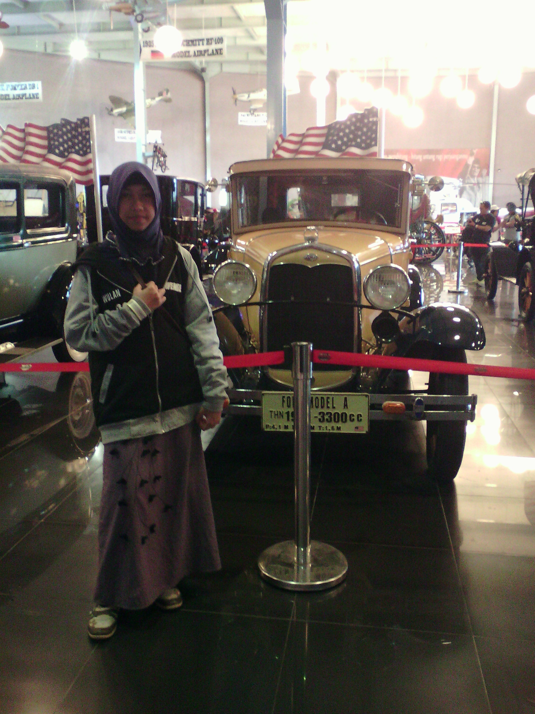

IN THE NAME OF ALLAH, THE MOST GRACIOUS, THE MOST MERCIFUL
Wulfree Blog

The best of people are those that bring the most benefit to the rest of mankind
Prophet Muhammad (PBUH)
- MENU
- About Me
- Tutorial
- Contact Us
Assalamu'alaikum...Halo,kenalin namaku Tri wulandari sering dipanggil Wulan. Aku berasal dari Jawa Tengah.
Saat ini kesibukanku sebagai seorang mahasiswa D3 Teknik Informatika di sebuah universitas negeri di Surakarta sejak tahun 2019 lalu.
Ini merupakan website yang kubuat untuk latihan belajar html dan css.
Cara Membuat Bolu Kukus
- Bahan yang dibutuhkan
- 2 butir telur
- 2 kuning telur
- 175 ml air soda manis
- 250 g tepung terigu
- 250 g gula pasir halus
- ¼ sdt pewarna makanan (sesuai selera)
- Mangkuk cetakan dari kertas
- Resep Bolu Kukus
- Dalam mangkuk, campurkan telur, kuning telur, dan gula pasir.
- Ratakan dengan mixer dengan kecepatan tinggi selama setengah jam hingga adonan jadi putih dan kental.
- Campur tepung terigu secara bertahap dengan mikser masih dinyalakan dan tuang air soda hingga rata.
- Pisahkan sekitar 100 ml adonan dan campur dengan pewarna makanan sesuai seleramu.
- Dalam dandang, didihkan air di atas api besar. Bungkus dan tutup dandang dengan kain.
- Di mangkuk cetakan kue bolu, masukkan cetakan kertas. Tuang adonan ke dalam cetakan kertas hingga ½ penuh dan campur 1 sdt adonan dengan pewarna makanan.
- Taruh cetakan berisi adonan ke dalam dandang dan kukus selama 20 menit dalam keadaan ditutup rapat.
- Buka tutup dandang dan lepaskan kue dari cetakan kue bolu.
- Kue bolu siap disajikan.
Contact Us :
Wulfree
Karanganyar
Indonesia